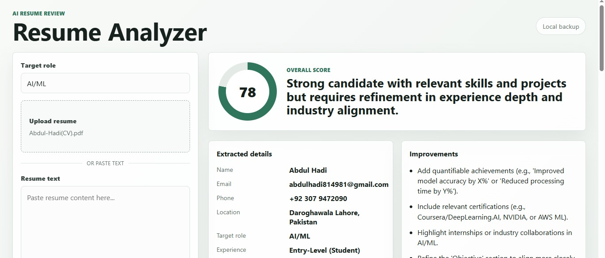
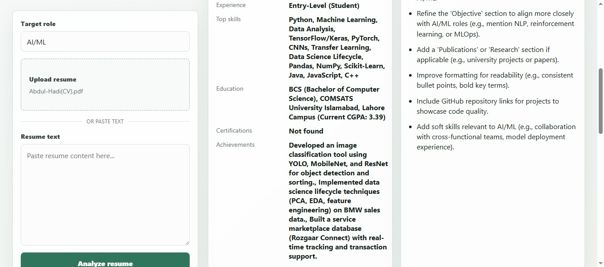
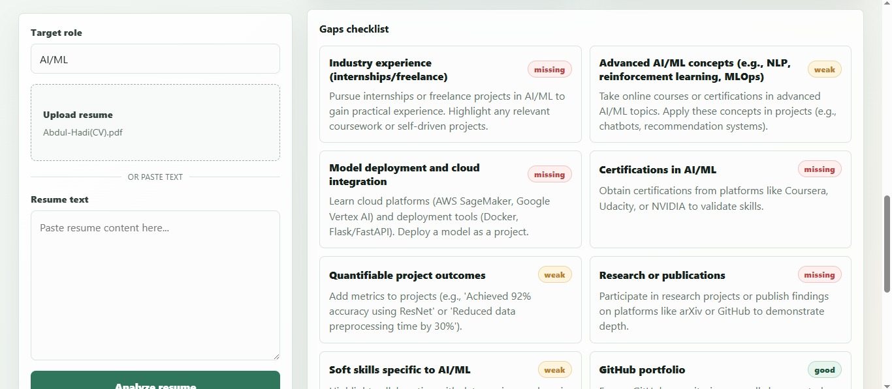

Work / Case Studies
What I've actually shipped — with the messy parts left in.
Three projects, in order of how directly they prove the claim: an agent that makes structured judgment calls on real input, not just a script that calls an API.
Resume Analyzer
An agent that reads a resume and produces structured judgment on it: an overall score out of 100 with a summary verdict, an extracted breakdown of the candidate's actual details, and a checklist of specific gaps the candidate should fix. Built in Python, using the Mistral API for the reasoning layer, with a backend that forces the model's output into a consistent, structured format rather than letting it return free text.



Where it broke, and what I did about it
Early on, I ran a resume with inconsistent formatting — no clear section headers, work experience and education blended together — and the agent mis-scored it. It couldn't reliably tell where one section ended and another began, so the "extracted details" output came back thin and the score didn't reflect the candidate's actual profile. I fixed this by adjusting the model's instructions to handle missing or unclear section boundaries gracefully — explicitly telling it what to do when a section isn't clearly labeled, instead of assuming every resume would arrive well-structured. That's the difference between a demo that only works on clean inputs and something closer to what this needs to actually be: a judgment call under real-world mess.
Known issue — being upfront about it
The app currently labels a result "Local backup" when it was actually generated by a real model (Mistral) — the UI's check only looks for an OpenAI API key specifically, so a Mistral-powered result gets mislabeled. The analysis itself is real; the label is wrong. This is on my list to fix before I'd call this fully production-ready — see the "still ugly" list on my submission.
Building My First CRUD API
Before this, "API" felt like a huge, complicated word. I built a Task API in Python using FastAPI, step by step — starting from a basic server, then adding one endpoint at a time: listing, getting, creating, updating, and deleting tasks.
One decision I made was around validation: rejecting a task with an empty title. I didn't just follow a rule — if you ask someone for water and they hand you a burger, you're not going to accept it, because it's not what you asked for. If the data doesn't match what's actually being asked for, it shouldn't be allowed through.
Result: I went from not understanding API fundamentals at all, to being able to read an error and diagnose it myself — because I understand the logic behind what I built, not just the code I copied.
Making My Data Survive — Postgres Migration
My CRUD API worked, but every task disappeared on restart — data only lived in memory. I restructured the code into layers (routes, business logic, storage) so the storage method could be swapped without touching the rest, then moved from an in-memory list to a real Postgres database.
Along the way, my machine's BIOS had virtualization disabled and locked behind a password from a previous admin — Docker couldn't run. I didn't give up: I installed Postgres directly instead and kept going. I didn't get there the "right" way through Docker, but I stayed dedicated to the actual goal.
Result: I created a task, restarted the database and server, and the task was still there. That was the real point — make data outlive a restart. I did.
Before / after — cutting the generic AI voice
"This project demonstrates a results-driven approach to building scalable, robust backend systems, leveraging industry-standard tools to deliver a seamless, production-ready solution."
→ "I made my task data survive a restart. I hit a wall with Docker I couldn't get around, so I found another way to get there — and it worked."